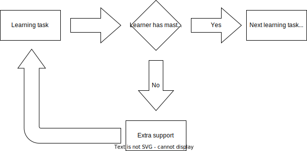

Links
To navigate this slide deck: Use cursor keys or click on arrows on bottom right. Use Esc key to toggle overviewPower to the people
Who teach the people
To code
Why listen to me
- Been working in alt tech ed for > 5 years
- 90%+ of grads since 2020 get jobs immediately. In South Africa
- Lots of education nerds at Python conferences
Bloom's 2 sigma problem
"The average student tutored one-to-one using mastery learning techniques performed two standard deviations better than students educated in a classroom environment"
Mastery learning techniques
Skills stack on top of skills

One to one?
- No hiding at the back of the class
- Keep learners engaged
- Most importantly: The teacher gets to really understand the learner
TLDR
- Meet the learner where they are
- Keep it engaging
Lectures and classrooms...
Are really hard to get right :/One on one / small group teaching
- Waaaaay more powerful
- Waaaaay more expensive
All we have is time

What is teaching?
- knowledge transfer?
- answering questions?
- solving problems?
Teaching is planting seeds + nurturing those seeds

Goal
Set a learner up so that they continue to learn and grow on their ownGrowth mindset vs Fixed mindset
- Fixed Mindset == Belief that you either have it or you don't
- Growth Mindset == Belief that you have the ability to grow and learn
Foster a growth mindset in...
- The people you teach: it amplifies their rate of growth
- Yourself as a teacher: You can become a better teacher
The end

These slides - extra resources - links to my socials
Attribution
- Wikimedia attribution: https://commons.wikimedia.org/wiki/File:Standard_deviation_diagram.svg
- Creative commons licence